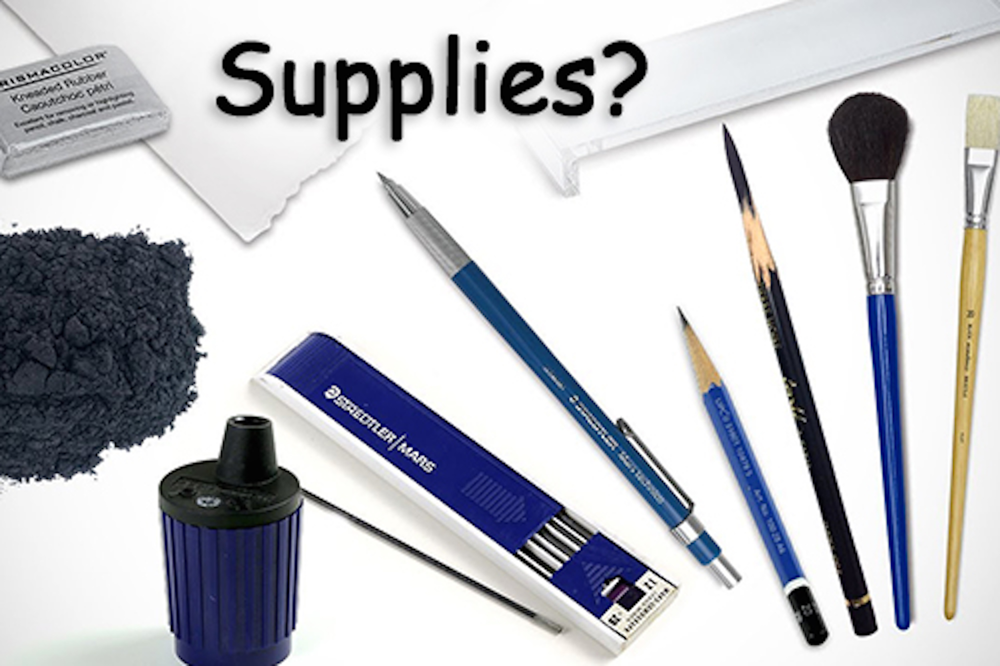

- Drawing Pencil Sets
- A sketchbook
- Choose a drawing surface that will affect the finished result.
- Kneaded Eraser
- Make a rough sketch.
- Use light, repeated strokes.
- If you're drawing a real object, cross check what you have on paper with the original object.
- Imagine what you want the object to look like ultimately, and make a light sketch with a pencil.
- A great method is to imagine the basic shapes the object is made of.
This video gives you some useful tips surrounding the concept of getting better at drawing. This doesn't tell you how to get better, it just explains the things that you should know and expect as an artist who wants to improve.